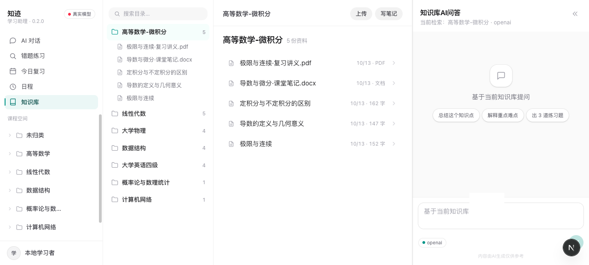

AI 学习私教与智能复习系统
面向大学生的个人学习管理台。把传进来的资料变成能刷的题，
再按掌握度和到期时间把复习排好；AI 不擅自改你的数据。
Contents · 目录
背景只讲用户视角；技术一段一项、一页，讲清「是什么、我们怎么做的、代价是什么」。
这个应用做什么、实际一周怎么用。技术是后面六页的事，这里不出现技术名词。
回合编排 · 工具调用 · 工具权限 · 检索 · MCP · 联网搜索。每项一页。
真实界面长什么样，用什么指标验的，数字的口径是什么。
哪些做到一半、哪些还没做，接下来按什么顺序补。
01 背景 · 要做的三件事
三件事不是三个功能，是一条链：每一步的产出，都得成为下一步的输入。
Step 1
讲义、课件、笔记、错题照片传进来，按学科分好。
Step 2
按你传进来的资料出题，不是随便凑一套。
Step 3
今天该练哪几题，系统排好，不用自己惦记。
01 背景 · 实际是这样用的
不是功能清单，是一个人的真实使用顺序。
这周的课件、笔记、错题照片一次性丢进去，按学科分好。以后不用再翻各个平台找一份材料。
整理就着资料提问，答案标着出自哪份资料第几页，点开就能对。讲不清的地方当场记一条。
溯源按这周传的资料出题，做错的方向会多出几道；做完能看参考答案和关键步骤。
练习到期题和薄弱学科自动排好，练完打个分，下次什么时候复习跟着掌握度走。
复盘资料没切好，提问就定位不到页；错因没记下，出题就无从针对；掌握度没更新，复习就排不准。下一页开始，技术就是围绕"别让链断在中间"展开的。
02 技术 · 回合编排
我们没有做成"问一句答一句"，而是把一回合拆成四个节点，每走一步都留一次档。
节点与分支都写在图上，不藏在某个函数的 if 里。
实现上：每个节点结束都落一次检查点，状态存在库里，进程重启也不丢。
02 技术 · 工具调用
工具是模型唯一能改变外部世界的入口，所以每个工具的契约都写死：名字、参数、例子、边界、错误行为。
跟"我自己的学习资料"有关的两条路。
knowledge_search — 查学科知识库，返回片段带出处mistake_search — 查错题与误区记录，能按关键词过滤并统计同类错误频次写入的两个入口，都要过确认。
save_note — 把结论沉淀进某个学科库，先弹确认再落库write_file — 写进文件工作区（Markdown / 文本 / 代码），同名会覆盖让模型能看见用户自己放的文件。
read_file — 读取工作区里的一个文本文件list_files — 列出全部文件，按最近修改排序资料之外的部分，才走这条路。
web_search — 联网搜索（下一页细讲）fetch_url — 读取网页正文，自动去标签与脚本calculator — 计算数学表达式工具失败不炸回合。单次超时 + 只对可重试错误做有限退避重试；还失败就转成一条普通工具消息告诉模型"这条路不通"，让它换条路走——整轮不会因此崩掉。
02 技术 · 工具权限
这是"AI 不会擅自改你的数据"这句话的技术兑现——它落在执行层，不落在提示词里。
按角色裁剪工具清单，不是靠提示词说"你不能用这个"。
即使模型想办法绕过清单，执行层也会挡下来。
为什么两层都要有。只做第一层，模型仍会说出被禁工具的名字然后调用失败；只做第二层，模型会一遍遍重试、白白烧轮次。两层一起做，"看得见"和"跑得动"才都对得上。
02 技术 · 检索
四路不是堆料，每一路都对应一类实测出来的漏召回。
trigram 分词，中文按字面也能命中，不需要先分词。
局限：错一个字就漏
走同义词表：本征值 → 特征值，queue → 队列，中英对照也在表里。
局限：靠词典，推断有噪声
「秩」「队列」这种两个字，进不了 trigram 索引，单独走一路。
局限：按覆盖度排序，精度中等
字面全不同、意思相近仍能召回，走向量相似度。
局限：没有真实模型时不可靠
技术上有个关键点：这四路的分数单位不一样，不能直接相加，所以按名次加权融合（k=60）；融合完再补一层词面精排，看谁的原文里真的出现了你问的字、且出现在标题上。
消融证据：关掉精排，MRR 从 0.9714 掉到 0.9571，命中数不变——它改善的是排序，不是召回。35 道题里有 1 道是同义词题，接上真实向量模型后 35 道全对。
02 技术 · MCP
MCP（Model Context Protocol）是连接 AI 应用与外部工具、数据源的一套开放标准，官方拿它类比 LSP。
为什么用现成标准，而不是自研协议：自研协议没有生态，换个宿主就废掉了；MCP 已经是事实标准，接一次到处能用。我们的取舍是：只做我们用得上的部分，别的明确说"没做"。
02 技术 · 联网搜索
这是唯一一个会引入外部信息的能力，所以对它的约束也最严。
按配置自动选择，不需要用户逐个配。
一条硬约束：搜回来的内容一律标为「外部资料」，和用户自己传的资料分开——不然模型分不清哪句是"我说的"、哪句是"网上说的"，出错时也说不清责任。

知识库页实拍：左学科目录树 · 中资料列表 · 右可直接就着当前库提问
03 应用与验证
演示数据由脚本一键播种，可复现；真实使用需自己上传资料。
04 边界与下一步
这一页是主动交代边界——写清楚缺什么，比被人问出来体面。
| 能力项 | 状态 | 依据 / 还缺什么 |
|---|---|---|
| 中断可恢复 | 达标 | 状态图 + 检查点 + 中断恢复，均有回归测试覆盖 |
| 检索准确 / 可追溯 | 达标 | 35 题考卷，接真实向量 35/35，引用精确到页 |
| 工具执行治理 | 一半 | 有双层权限与超时兜底，缺按参数与资源的细粒度约束 |
| 长上下文管理 | 一半 | 有抽取式摘要与预算控制，缺关键事实外置成结构化笔记 |
| 长期记忆 | 一半 | 按课程隔离、写入前确认，缺过期、替换与删除机制 |
| 任务级成功率评测 | 没做 | 现有考卷只测「找到没」「分类对不对」，不测「这次复习有没有用」 |
05 收束
技术不是目的，是让这三件事靠得住的手段：找得到、出得准、复习排得对，
而且它不会偷偷改你的数据。
从「找到没」升级到「这次复习有没有用」。
记错的东西能改、能删、过期会失效。
题太简单就看不出改动的好坏。
谢谢，欢迎提问 · 知迹 · 赛道十三